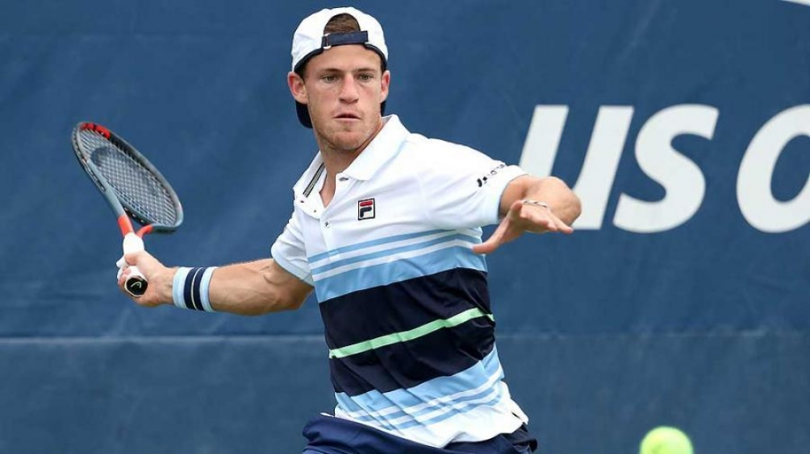

El Peque brilló en su partido frente al francés Corentin Moutet, se impuso en sets corridos por 6-4 y 6-2 y pasó por primera vez a los cuartos de final del certamen catalán.
Atrás quedó el sufridísimo partido de Diego Schwartzman frente a Frances Tiafoe en la segunda ronda del ATP 500 de Barcelona, donde el argentino estuvo a nada de perderlo y, con una espectacular remontada, dio vuelta el segundo set cuando estaba 4-5, y finalmente se quedó con la victoria tras imponerse en el tercero. Muy atrás quedaron todos esos errores que incomodaron al Peque en el primer tramo de su debut y no lo dejaron mostrar su mejor versión. Es que este jueves, un Schwartzman renovado, concentrado y en un altísimo nivel, liquidó al francés Corentin Moutet por 6-4 y 6-2 y avanzó a los cuartos de final del torneo catalán
El tenista argentino no tuvo piedad en el arranque del segundo y rápidamente se puso 3-0. Y aunque titubeó y volvió a ceder su servicio, finalmente no tuvo inconvenientes para cerrarlo con un contundente 6-2.
Con la victoria de hoy, el Peque sigue estirando su buen presente sobre polvo de ladrillo: llegó al menos a cuartos de final en ocho de los últimos nueve torneos que jugó en canchas lentas, desde principios de 2020, y alcanzó 180 triunfos, entre el circuito ATP y la Copa Davis, con 90 de ellos sobre polvo de ladrillo.
El torneo de Barcelona reparte 1,565 millones de euros en premios y tiene como principal favorito a Rafael Nadal, máximo campeón histórico con 11 títulos.